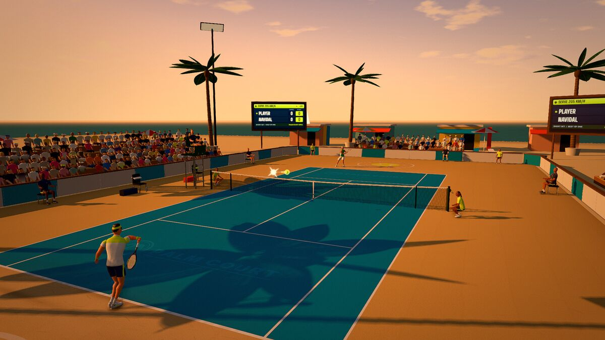

In Match setup (under Play, Training, Quick Match vs CPU) there is a Surface row, a Venue row and a Time of day row. They look like three ways to pick a court. They are not equal, and the difference is the most useful thing to know on this page.
Surface: the only one that changes the ball
A surface is physics. The game gives each one two numbers: how much of the ball’s downward speed comes back up after the bounce, and how hard the court grips the ball’s spin.
| Surface | Bounce energy kept | Spin grip | Unlocks at | Effect on play |
|---|---|---|---|---|
| Hard | 76 percent | Medium | Level 1 | True, medium-height bounce |
| Clay | 81 percent | High | Level 3 | Higher, slower, more kick on topspin |
| Grass | 70 percent | Low | Level 6 | Low, quick, skidding slice |
That is the whole list of things a court can do to the ball in Palm Court. The courts and modes guide explains how to adapt your tactics to each, and the groundstroke guide covers the spin side.
Venues: the place, never the physics
A venue is the scenery, crowd, sky and light around a surface. The rule in the game’s code is plain: a venue names the surface it plays as, and no venue adds a physics number. A match at the Beach Court bounces exactly like any other hard court.

| Venue | Unlocks at | Plays as | What you see and hear |
|---|---|---|---|
| Palm Court (the classic stadium) | Level 1 | Whichever surface you pick | The original packed stadium, the loudest of the outdoor crowds |
| Beach Court | Level 7 | Hard | A blue court on sand, a sea horizon, palms, huts and umbrellas, a smaller crowd on wooden bleachers, the sound of the sea |
| Indoor Arena | Level 11 | Hard | A closed roof, a hung scoreboard cube, a deep-blue court, a loud crowd and an echoing hall |
The Steam edition adds a Rooftop Court (unlocked at level 14) above a city skyline, with glass railings, wind-swept pennants and a small crowd. Like the others it plays as a hard court, and it is not in the free browser game.
Three rules govern how venues and surfaces interact:
- A venue wins over the surface. Picking the Beach Court sets the surface to hard. If you then pick clay, the game drops the venue and goes back to the classic stadium, because you asked for clay.
- A match at a venue is played on the surface it plays as. The Beach Court and the Indoor Arena are hard courts, so they are no use for a goal about clay or grass.
- Online, everyone sees the same thing. Matches carry only the venues and lights that both editions have, so a friend never sees a place you do not have. A stranger matched online plays on the classic stadium.
Some World Tour events are played at a venue as well; the Coral Bay Classic and the Marina Challenger are beach events. That is cosmetic too: each event has its own surface.
Times of day: light, and a little sound
The time of day sets the sun, the sky and the lighting. The browser game has three: Day (free), Golden hour (level 4, a low sun and long shadows) and Night (level 8, floodlights). The Steam edition adds a Misty dawn and a Blue hour. None of them changes the bounce, the ball’s flight, the line calls or the CPU’s play.
They do change the open-air sound under the crowd. Birdsong fills the day, thins out at golden hour as the first crickets begin, and gives way to crickets at night. The court adds its own mix: grass is leafy and quiet, clay is windier, and a hard court sits closer to a city. You hear it mostly in the hush before a serve, and almost not at all in a rally.
Two venue quirks to know:
- The Indoor Arena ignores the time of day. The lights are always on, so the Time of day choices are marked as unavailable while it is selected.
- The Rooftop (Steam) offers only golden hour, blue hour and night, and falls back to golden hour if you ask for another.
What the choices do change for you
There is one real effect, and it is about goals, not the ball. Several challenges and weekly goals ask for a result on a given surface or at night: “Win a match on clay”, “Win a match on grass”, “Win a night match” and the weekly versions. Those need the matching surface or light, so the Beach Court (always hard) is no help for a clay goal.
Otherwise the rule of thumb is simple. If you want to change how the points play, change the surface. If you want a different mood, change the venue and the light. If you are practising for a fixed set-up, such as today’s Daily Cup, read what it says before you start: the setup is already chosen for you, down to the venue.
Questions that come up
- Does the sand slow the ball at the Beach Court? No. The ground there is a hard court as far as the physics goes, and the sand is only painted around it.
- Is there wind? Not in the ball’s flight. The game simulates gravity, air drag and the lift that spin creates, and nothing else, so wind-swept pennants and the sea breeze are decoration and sound.
- Does a bigger or louder crowd help the CPU? No. Crowd size and volume are sound and scenery only. The Indoor Arena is the loudest venue because of the hall, not because it matters.
- Does night play differently? The ball, the line calls and the CPU are identical to a daytime match. Choose it for the mood, and drop a graphics preset if it stutters (the performance guide says why).
- Which should I use for practice? Pick the surface that matches the one you want to improve on and leave the venue on the classic stadium. Venues are for variety.
How to pick them
- Open Play, Training, Quick Match vs CPU, which takes you to Match setup.
- Set Surface first, because it is the one that changes the play.
- Then pick a Venue (the Beach Court sets the surface to hard) and a Time of day.
- Choices you have not unlocked yet are locked with the level that opens them.
Unlocking everything
All of these places and lights unlock by player level and cost nothing: clay at 3, golden hour at 4, grass at 6, the Beach Court at 7, night at 8 and the Indoor Arena at 11. A casual player who plays a few matches a day reaches level 11 in about five days, according to the economy simulator; the economy guide has the full timeline.